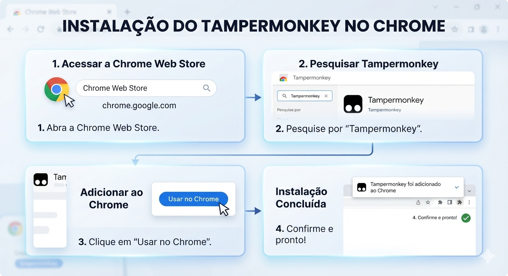
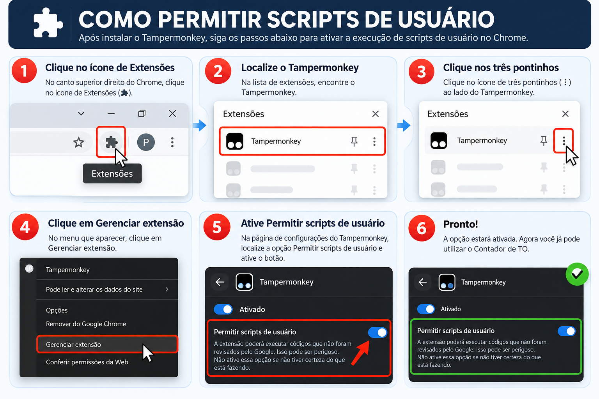
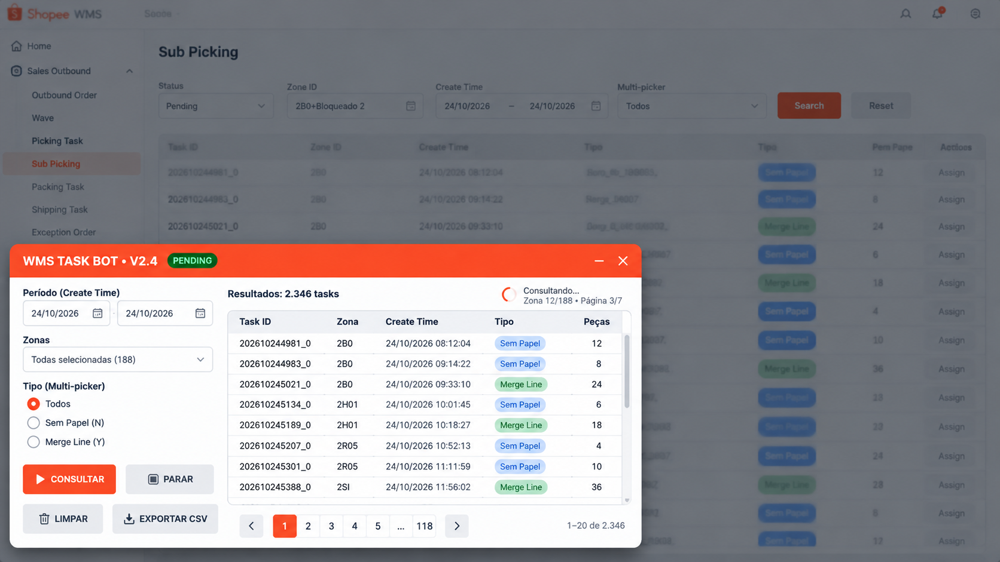

01
PREPARAÇÃO
Instale a extensão Tampermonkey
No navegador Chrome, instale o Tampermonkey pela loja oficial de extensões e confirme a instalação.

Imagem da etapa 01imagens/01-instalar-tampermonkey.pngPasso a passo para instalar, ativar e utilizar o painel de consulta de tarefas pendentes no WMS.
Siga as etapas na ordem abaixo
No navegador Chrome, instale o Tampermonkey pela loja oficial de extensões e confirme a instalação.

Imagem da etapa 01imagens/01-instalar-tampermonkey.pngConfira as permissões do Tampermonkey e, se o Chrome solicitar, ative a opção de permitir scripts do usuário.

Imagem da etapa 02imagens/02-habilitar-scripts.pngQuando o arquivo tarefa-mais-antiga.user.js estiver publicado neste repositório, clique no botão Instalar script e confirme a instalação no Tampermonkey. O arquivo funcional deve ser adicionado ao repositório antes desta etapa.
Confira as permissões e confirme somente se você reconhece o código.
Faça login no Shopee WMS com sua conta autorizada. No menu lateral, acesse Sales Outbound → Sub Picking.

Na tela Sub Picking, abra o WMS TASK BOT, defina o período, selecione as zonas e escolha o tipo de tarefa (Todos, Sem Papel ou Merge Line).

Imagem da etapa 05imagens/05-abrir-painel.pngClique em CONSULTAR e acompanhe os resultados. A tabela mostra Task ID, zona, data de criação, tipo e quantidade de peças. Use a data de criação para localizar a tarefa pendente mais antiga.
Quando não houver resultados, confira o período e as zonas selecionadas. Zero tarefas não significa erro na consulta.

Com o script instalado e o WMS aberto, acesse o painel e verifique suas tarefas pendentes.
Ver instruções de instalação